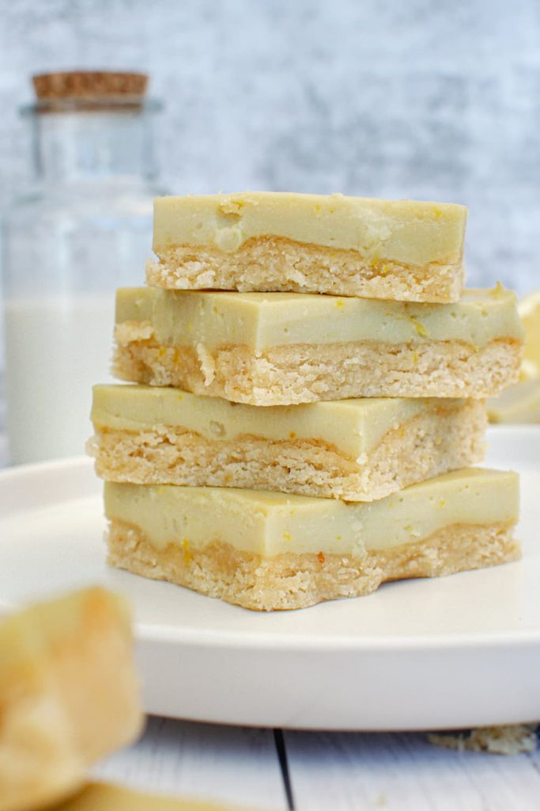

Almond Flour Lemon Bars

Description
I make this recipe for special occasions whenever I'm back home with my family! I'm vegan and most of my family is lactose intolerant. On top of that, my dad's also diabetic.
Because of that, this vegan almond flour-based lemon bars are perfect! I often sub out some of the maple syrup for a sugar-free sweetener such as erithrytol as well.
Credits to https://plantprosperous.com/almond-flour-lemon-bars/ for the recipe!
Ingredients
- 2 cups almond flour/meal
- ½ cup tapioca flour or cornflour
- ¼ cup coconut oil
- ½ tsp baking powder
- ¼ cup maple syrup
- ⅓ cup lemon juice
- Zest of ½ lemon
- 1 cup canned full fat coconut milk
- ⅓ rice malt syrup
- 2 tbsp cornflour
- 2 tbsp coconut oil
- ½ tsp vanilla extract
- Pinch of turmeric (it’s just for the color, optional)
Steps
- Preheat the oven to 350°F and line an 8x8 inch square pan with baking paper. Set aside.
- Add the almond meal and tapioca flour into a large bowl, and mix until combined. Add the coconut oil and rice malt syrup and mix until it all comes together.
- Finger press the mixture onto the bottom of the pan and bake until it is just lightly browned on top. (~15 minutes)
- Mix the lemon juice with tapioca flour and whisk well to remove any lumps. Whisk in the rest of the ingredients and place the pot on medium to high heat. Stir continuously until you get a curd consistency.
- Take the pot off of the heat and pour it onto the crust. Refrigerate for 3 hours or until set. Cut into 9 squares. Refrigerate up to 7 days.